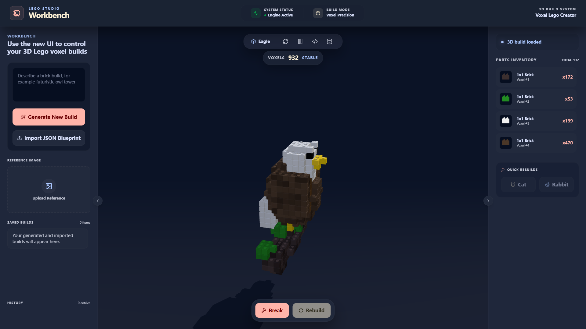
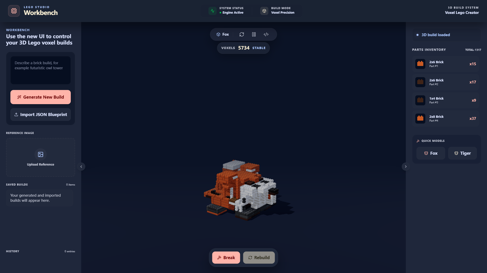
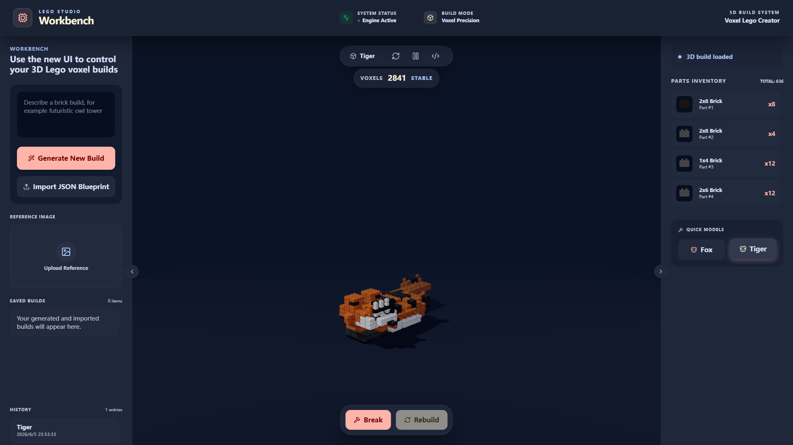

How a visual AI demo evolved into a more structured, stable, and physically credible construction pipeline.
Both versions connect user intent to an interactive 3D result.
Prompt and reference input
Structured generation
Coordinates and colors
Interactive rendering

Recognizable at a distance, but highly fragmented as a construction plan. Cat and Rabbit controls are present but unavailable.
The earlier pipeline prioritizes recognizable form, without a complete validation-and-repair layer.
Also: “Can the geometry be organized as a believable brick structure?”
VOXELS → BRICKS → VALIDATION → REPAIR

columns
repair
limits
interlock
scoring
It is a smaller, more structured, and more physically credible construction system.